AnyRemote
Dieser Artikel wurde für die folgenden Ubuntu-Versionen getestet:
Ubuntu 16.04 Xenial Xerus
Ubuntu 14.04 Trusty Tahr
Zum Verständnis dieses Artikels sind folgende Seiten hilfreich:
Mit anyRemote  können über ein Handy oder ein anderes Mobilgerät Programme auf dem PC ferngesteuert werden. Es lassen sich eine Vielzahl von Medienplayern z.B. Totem oder Amarok, aber auch Bildverwaltungs-Software wie digiKam oder eine Präsentation über OpenOffice.org Impress steuern.
können über ein Handy oder ein anderes Mobilgerät Programme auf dem PC ferngesteuert werden. Es lassen sich eine Vielzahl von Medienplayern z.B. Totem oder Amarok, aber auch Bildverwaltungs-Software wie digiKam oder eine Präsentation über OpenOffice.org Impress steuern.
Vorbereitung¶
Das Mobiltelefon muss mittels Bluetooth, Infrarot oder seriellem Kabel mit dem Rechner kommunizieren können. Die entsprechende Verbindung wird für die weitere Anleitung vorausgesetzt. Außerdem muss das Mobiltelefon Java-Programme ausführen können. Welche Geräte bereits getestet wurden und ob diese für anyRemote verwendet werden können, kann man in der Liste der unterstützten Geräte nachlesen.
Hinweis:
Bei den meisten Geräten funktioniert ausschließlich die Übertragung per Bluetooth zuverlässig. Nur wenige Geräte unterstützen bisher die fehlerfreie Übertragung über Infrarot oder ein USB-Kabel.
Voraussetzungen¶
Für die Datenübertragung zwischen Rechner und Mobiltelefon werden je nach Verbindungsart folgende Programme benötigt [1]:
python-bluez (universe - Verbindungen über Bluetooth)
irda-utils (Verbindungen über Infrarot)
 mit apturl
mit apturl
Paketliste zum Kopieren:
sudo apt-get install python-bluez irda-utils
sudo aptitude install python-bluez irda-utils
Installation¶
Die benötigten Pakete für anyRemote sind in den offiziellen Paketquellen verfügbar und lassen sich daher leicht installieren[1]. Je nach verwendetem Desktop werden folgende Pakete benötigt:
anyremote (universe - Das Grundprogramm wird immer benötigt)
ganyremote (universe - Grafische Oberfläche für GNOME)
kanyremote (universe - Grafische Oberfläche für KDE)
anyremote-doc (universe - Optionale Dokumentation)
mit apturl
Paketliste zum Kopieren:
sudo apt-get install anyremote ganyremote kanyremote anyremote-doc
sudo aptitude install anyremote ganyremote kanyremote anyremote-doc
PPA¶
Die Versionen aus den offiziellen Paketquellen können unter Umständen etwas veraltet sein. Wer lieber die neuste Version des Programms benutzen möchte, kann das folgende "Personal Package Archiv" (PPA) [2] verwenden:
Adresszeile zum Hinzufügen des PPAs:
ppa:anyremote/ppa
Hinweis!
Zusätzliche Fremdquellen können das System gefährden.
Ein PPA unterstützt nicht zwangsläufig alle Ubuntu-Versionen. Weitere Informationen sind der  PPA-Beschreibung des Eigentümers/Teams anyremote zu entnehmen.
PPA-Beschreibung des Eigentümers/Teams anyremote zu entnehmen.
Damit Pakete aus dem PPA genutzt werden können, müssen die Paketquellen neu eingelesen werden.
Nach dem Aktualisieren der Paketquellen erfolgt die Installation wie oben angegeben, allerdings sind momentan die GUIs für 16.04 nicht über das PPA greifbar.
Mobilgerät¶
Wenn das alles geklappt hat, muss man dafür sorgen, dass auch auf dem Mobilgerät die anyRemote Client-Software installiert ist. Diese muss man von der Webseite  herunterladen. Für Android-Geräte ist das Programm auch auf Google Play vorhanden. Dabei muss man ggf. auswählen, welche Größe die Symbole haben sollen (für Android-Geräte nicht notwendig). Eine sinnvolle Größe ist abhängig von der Bildschirmgröße des Mobilgeräts. Empfehlungen dazu findet man auf dieser Seite .
herunterladen. Für Android-Geräte ist das Programm auch auf Google Play vorhanden. Dabei muss man ggf. auswählen, welche Größe die Symbole haben sollen (für Android-Geräte nicht notwendig). Eine sinnvolle Größe ist abhängig von der Bildschirmgröße des Mobilgeräts. Empfehlungen dazu findet man auf dieser Seite .
Hinweis:
Es kann vorkommen, dass man die Datei auf dem Mobilgerät zunächst suchen muss. Beispielsweise wird sie bei einem Sony Ericsson k810i im Ordner Spiele abgelegt.
Benutzung¶
| 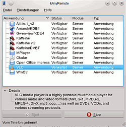 |
| kAnyRemote |
| 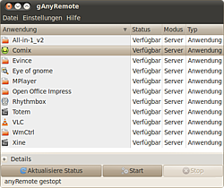 |
| gAnyRemote |
gAnyRemote / kAnyRemote¶
Um anyRemote nutzen zu können, muss man zunächst die entsprechende grafische Oberfläche auf dem Rechner starten [3]. Im GNOME-Menü ist gAnyRemote nach der Installation unter "Anwendungen -> Zubehör -> gAnyRemote" zu finden. Im K-Menü ist es unter "Dienstprogramme -> kAnyRemote" zu finden. Beim ersten Start wird man gefragt, ob man die Java Client-Software (siehe Abschnitt Mobilgerät) herunterladen möchte. Außerdem wird der Einstellungsdialog geöffnet. Hier können verschiedene Einstellungen vorgenommen werden. Diesen Schritt kann man jedoch auch später jederzeit machen. Sowohl unter GNOME als auch unter KDE wird das Programm nun als Symbol im Panel angezeigt. Durch  öffnet sich das Hauptfenster. Hier sieht man alle derzeit installierten Anwendungen, die sich mit anyRemote steuern lassen. Hier wählt man nun das Programm aus, welches man fern steuern möchte und klickt anschließend auf "Start".
öffnet sich das Hauptfenster. Hier sieht man alle derzeit installierten Anwendungen, die sich mit anyRemote steuern lassen. Hier wählt man nun das Programm aus, welches man fern steuern möchte und klickt anschließend auf "Start".
Die Verwendung ohne grafische Oberfläche, wird im Abschnitt Aufruf via Terminal erläutert.
Verbindung herstellen¶
Bei Bluetooth-Verbindungen ist zu beachten, dass die beiden Geräte bereits "gepaired" sein müssen. Bei den Bluetooth-Einstellungen von Computer und dem Mobilgerät sollte die Option "sichtbar" gewählt sind und die Geräte sollten bereit für Verbindungen sein. Eine Anleitung zur Bluetooth-Einrichtung und zum Verbinden mit Mobilgeräten, ist im Artikel Bluetooth/Einrichtung zu finden.
Ist alles soweit eingerichtet und man das Programm, welches man fernsteuern möchte, ausgewählt hat, klickt man anschließend auf "Start". Als nächstes startet man auf dem Mobilgerät die Java Client-Software anyRemote. Über "Optionen -> Search" kann nach dem zu steuernden Computer gesucht werden. Nachdem das gewünschte Gerät gefunden wurde, wird durch die Auswahl von "Connect" die Verbindung aufgebaut. Nun muss man auf dem Mobiltelefon die Sicherheitsabfrage mit "Ja" beantworten. Ist die Verbindung geglückt, wird in der Statusleiste am unteren Rand des Fensters "Mit dem Telefon verbunden" angezeigt. Auf dem Display des Mobilgerätes erscheint die Oberfläche zur Fernsteuerung der Software.
Nachdem bei der Suche nach einem Computer der gewünschte angezeigt wurde, kann man anstatt "Connect" auch "Optionen -> AutoConnect" wählen, dadurch verbindet sich anyRemote nach dem Start auf dem Mobilgerät automatisch mit dem ausgewählten PC.
| 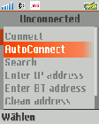 |
| Verbindung herstellen |
| 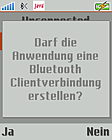 |
| Sicherheitsabfrage |
Client-Software¶
Ist die Client-Software anyRemote auf dem Mobilgerät gestartet, so sieht man eine entsprechende Oberfläche mit vielen gängigen Symbolen, die man in ähnlicher Form von anderen Programmen kennt. Die Symbole, deren Positionen und Funktionen können je nach Zielprogramm unterschiedlich sein. Einige Beispielbilder sind nach der Tabelle aufgeführt. In der folgenden Liste sind alle gängigen Symbole, mit ihrer Wirkung, aufgeführt.
| anyRemote | |||
| Symbol | Wirkung | Symbol | Wirkung |
| Aufruf des Dateibrowsers (Bilder s.u.) |  | Vollbildschirmmodus der Anwendung starten / beenden | |
| Erste(s) Seite bzw. Bild |  | Letzte(s) Seite bzw. Bilde | |
| Vorherige(s) Seite bzw. Bild | Nächste(s) Seite bzw. Bild | ||
| Musikstück bzw. Video starten | Musikstück bzw. Video pausieren | ||
| Musikstück bzw. Video Rücklauf | Musikstück bzw. Video Vorlauf | ||
| Vorheriges Musikstück bzw. Video | Nächstes Musikstück bzw. Video | ||
| Musikstück bzw. Video stoppen | Lautstärke stumm schalten | ||
| Lautstärke verringern | Lautstärke erhöhen | ||
| Präsentation / Slideshow beenden bzw. Anwendung schließen | Hilfebildschirm anzeigen (Bild s.u.) | ||
| Taste ist nicht belegt | |||
Die Bilder und Symbole stammen von einem Sony Ericsson Handy. Die Darstellung kann bei anderen Mobiltelefonen unter Umständen geringfügig abweichen.
| 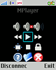 |
| Steuerung von MPlayer |
| 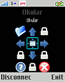 |
| Steuerung von Okular |
| 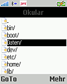 |
| Dateibrowser |
| 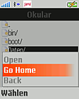 |
| Optionen im Dateibrowser |
| 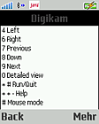 |
| Hilfebildschirm (hier für digiKam) |
Maussteuerung¶
Mit anyRemote lässt sich auch eine Maus emulieren. Dazu muss man zuerst in den Einstellungen auf dem Reiter "General" die Option "Beispiel" aktivieren. Anschließend kann man die Anwendung "Mouse test" wählen. Die folgende Tabelle gibt eine Übersicht über die Befehle, die sich an den Computer senden lassen:
| anyRemote | |||
| Taste | Wirkung | Taste | Wirkung |
| 1 | linke Maustaste drücken | 2 | mittlere Maustaste drücken |
| 3 | rechte Maustaste drücken | 4 | Bewegung nach links |
| 5 | Bewegung nach oben | 6 | Bewegung nach rechts |
| 7 | Scrollrad nach oben drehen | 8 | Bewegung nach unten |
| 9 | Scrollrad nach oben drehen | 0 | Leertaste betätigen |
| # | Doppelklick | * | Hilfebildschirm anzeigen |
Allerdings können diese Nummern nur mit Tastenhandys genutzt werden; bei Smartphones kann bei laufendem anyRemote-Client auf die Tastatur nicht zugegriffen werden.
Falls das Handy einen Joystick hat, so kann man die Maus auch damit steuern. Ein Druck auf den Joystick entspricht einem Druck auf die linke Maustaste.
Aufruf via Terminal¶
Um einen Starter einzurichten[4], der gleich das richtige Modul für eine Anwendung startet oder anyRemote über das Terminal[5] aufrufen möchte, kann die folgende Syntax verwendet werden (anstelle von ganyremote, kann natürlich auch kanyremote oder ohne grafische Oberfläche einfach anyremote eingegeben werden). Der Pfad muss je nach Speicherort der Konfigurationsdatei angepasst werden.
ganyremote -f /usr/share/anyremote/cfg-data/[MODUS]/[PROFIL].cfg
Einstellungen¶
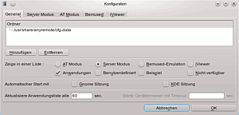Beim ersten Start der Software wird der Dialog "Einstellungen" automatisch geöffnet. Er lässt sich jedoch auch jederzeit über den Menüeintrag "Einstellungen -> Einstellungen" aufrufen. Auf dem Reiter "General" sind die wichtigsten Einstellungsmöglichkeiten aufgeführt. Hat man eigene Konfigurationsdateien für Anwendungen erstellt, so kann man den Ordner, in dem die Dateien liegen, durch auf die Schaltfläche "Hinzufügen" in die angezeigten Liste einfügen. Dadurch liest anyRemote die im Ordner befindlichen Dateien ein und können mit anyRemote verwendet werden. Zusätzlich kann man auswählen in welchem Modus man anyRemote betreiben möchte. Außerdem kann die Programmliste von anyRemote gefiltert werden ("Anwendungen", "Benutzerdefiniert", "Beispiele" oder "Nicht verfügbar"). Des Weiteren kann anyRemote automatisch mit einer Sitzung starten lassen, in dem man die Option "Gnome Sitzung" oder KDE Sitzung aktiviert, sowie einen Zeitintervall definieren, in dem die Anwendungsliste automatisch aktualisiert werden soll.
Modus¶
Generell sollte der Server Modus ohne weitere Konfiguration funktionieren und der Standard sein. Um den zum Mobiltelefon passenden Modus auszuwählen, sollte man sich diese Liste anschauen. Hier darf man sich ruhig an verwandten Modellen orientieren (z.B.: Nokia E50 -> Nokia E60, selbes Betriebssystem: Symbian 60, 3rd). Die Entwickler freuen sich über eine Rückmeldung bei Telefontypen, die in der Geräteliste noch nicht aufgeführt sind. Falls die Verbindung nicht zustande kommt, sollte man einfach den anderen Modus versuchen. Die folgenden Modi stehen zur Auswahl:
"Server Modus": Im Server Modus kann das Programm innerhalb eines Netzwerks eingehende Verbindungen via Bluetooth und GPRS akzeptieren.
"AT Modus": Im Client Mode (oder AT Modus) kann anyRemote mittels AT-Befehlen das Handy via Bluetooth, Infrarot (experimentell, weitere Informationen
) oder serielles Kabel ansteuern. Es beherrscht jedoch nicht jedes Mobilgerät beide Modi und auch nicht alle Verbindungsarten. Eine Möglichkeit zu testen, ob das Mobilgerät den AT Modus unterstützt, wird im Abschnitt Geräte Browser aufgezeigt."Bemused": Bemused
ist ein System, das die Verwaltung der eigenen Musiksammlung mittels Mobilgerät über Bluetooth ermöglicht. Unterstützt werden: Nokia 7650/3650, SE P800/P900 und Siemens SX-1. Weitere Informationen gibt es der Bemused-Seite des Projektes.."iViewer": man kann auch die iOS-App Command Fusion iViewer
zusammen mit anyRemote zu verwenden. iViewer ist ein Anwendung zur Fernsteuerung für das iPhone und den iPod Touch. Die Einrichtungsanleitung ist auf der iViewer-Seite des Projekts zu finden. Diese Funktion ist noch experimentell und es kann sein, dass noch nicht alles funktioniert.
Weitere Informationen zu den verschiedenen Modi liefert die Mode-Seite .
Geräte Browser¶
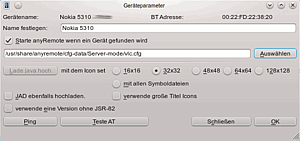Über den Menüeintrag "Einstellungen -> Geräte Browser" kann man seine Mobilgeräte verwalten und zu jedem Gerät spezifische Einstellungen hinterlegen. Mittels "Datei -> Suche nach Geräten" wird nach betriebsbereiten Mobilgeräten gesucht. Wurde eins gefunden, kann man für dies einen Namen festlegen und auswählen, ob anyRemote (und ein bestimmtes Programmmodul; Schaltfläche "Auswählen") automatisch gestartet werden soll, sobald diese Gerät gefunden wird. Zusätzlich kann man auswählen, ob die Java Client-Software mit bestimmten Symboldateien auf das Mobilgerät geladen werden soll. Zum Verbindungstest kann man die Schaltfläche "Ping" verwenden. Kann eine Verbindung hergestellt werden, erscheint "Ping OK!" in der Statusleiste. Darüber hinaus kann getestet werden, ob das Mobilgerät im AT-Modus betrieben werden kann ("Teste AT").
Die Gerätesuche funktioniert allerdings ggf. für Android-Geräte nicht.
Konfigurationsdatei bearbeiten / erstellen¶
Möchte man eine bestehende Konfigurationsdatei einer Anwendung anpassen, markiert man diese in der Programmliste und wählt im Menü "Datei -> Bearbeiten". Es öffnet sich ein einfacher Texteditor, in dem man die Datei ändern kann. Möchte man eine eigene Konfigurationsdatei erstellen, erstellt man eine Textdatei in einem beliebigen Editor[6], speichert diese mit der Dateiendung *.cfg und fügt den Ordner, in dem die Datei gespeichert ist, zur Liste im Einstellungs-Dialog hinzu. Informationen zur Syntax und zu den zur Verfügung stehenden Befehlen liefert Anleitung auf der Projektseite.
Probleme und Lösungen¶
Unter Ubuntu 16.04 kann es zu Problemen mit dem Verbindungsaufbau kommen. Im Handy erscheint eine Meldung "Nicht Verbunden - read failed, socket might closed or timeout, read ret: -1". Hintergrund ist, dass anyRemote den inzwischen veraltetet Kompatibilitätsmodus des Bluetooth-Daemons bluetoothd benötigt (Option --compat). Dazu kann in einem Editor mit Rootrechten die Datei /lib/systemd/system/bluetooth.service bearbeitet werden, den Eintrag
ExecStart=/usr/lib/bluetooth/bluetoothd
um die Option --compat ergänzen und abspeichern.
Danach die Befehle zum Neuladen der Daemons und Neustart von bluetoothd ausführen:
sudo systemctl daemon-reload sudo systemctl restart bluetooth
Um anyRemote nicht nur mit Rootrechten verwenden zu können, müssen die Rechte für /var/run/sdp angepasst werden:
sudo chmod 777 /var/run/sdp
Um das nicht nach jedem Neustart des Rechners ausführen zu müssen (der Socket wird dabei jeweils neu erstellt), kann man sich einen entsprechenden Eintrag in die rc.local legen, mit dem die Rechte schon beim Systemstart angepasst werden.
- Erstellt mit Inyoka
-
 2004 – 2017 ubuntuusers.de • Einige Rechte vorbehalten
2004 – 2017 ubuntuusers.de • Einige Rechte vorbehalten
Lizenz • Kontakt • Datenschutz • Impressum • Serverstatus -
Serverhousing gespendet von